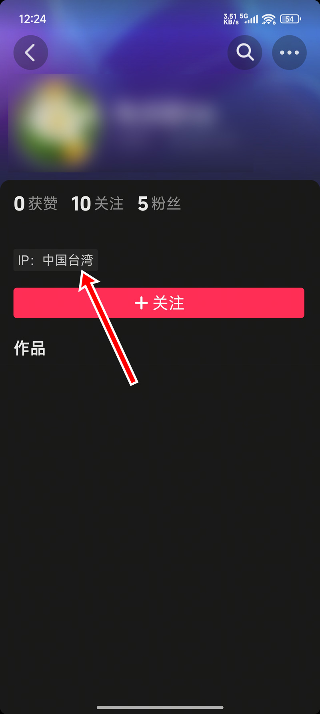

抖音ip地址怎么更改？操作非常简单，支持安卓和iOS更改IP地址。支持改成其它国家和地区IP地址，也支持改成其它省的IP地址。视频教程：https://youtu.be/YwLkrhbJ7DM
Clash 点击下载>>
Clash Meta 点击下载>>
v2rayNG 点击下载>>
v2rayN 点击下载>>
Clash 点击下载>>
Clash Verge 点击下载>>
Clash Verge 下载 M芯片>> | Intel>>
V2RayN 软件下载>>
支持抖音个人主页IP更改，和评论区显示的IP

温馨提示：
更改IP这个方法来自网络，建议用作娱乐，请勿用作其它用途。